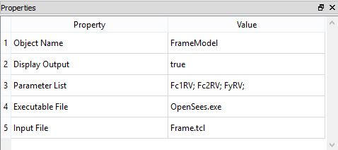
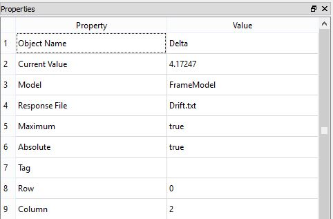
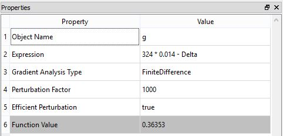

OpenSees Model
Class Name
Location in Objects Pane
- Models > External Software > OpenSees
Model Description
Model Form
- For users who have Tcl and OpenSees installed on the computer, this model allows parameters to be given to OpenSees and results to be returned to Rt.
DDM sensitivities
Properties
Object Name
- Name of the object in Rt
- Allowable characters are upper-case and lower-case letters, numbers, and underscore (“_”).
- The name is unique and case-sensitive.
Display Output
- Determines whether the model is allowed to print messages to the Output Pane.
Parameter List
- List of the parameters that should be mapped into the OpenSees model.
Executable List
- Absolute path to the opensees.exe file, for example:
C:/OpenSees/opensees.exe
Output
- This model does not automatically create any response objects.
- Rather, creates Command Response objects and/or File Response objects. In those objects, specify the name of the OpenSees model.
- In Command Response objects, specify the command that should be issued to OpenSees to get the response.
- In File Response objects, specify the name of the file where OpenSees puts the response.
Right-click Menu
Remove
Example
- Consider a two-bay, two-storey frame subjected to lateral loads and nonlinear pushover analysis. In the OpenSees structural model of this frame, characterize the concrete strength and the yield strength of the reinforcing steel as random variables. Then, compute the probability that the maximum drift ratio exceeds 1.4%.
- Dimensions of frame and the properties of materials are as follows:

- Also mind that Fc1RV, indicates compressive strength of cover concrete, and Fc2RV is the indicator of compressive strength of core concrete.
- To execute an input file in OpenSees and use its results in Rt, one can use following procedure:
- To run OpenSees successfully it is necessary to have a copy of OpenSees.exe file in the same directory as Rtx input file and Tcl file.
- OpenSees Model property in Rtx must be completed properly, using absolute or relative path to each file:

- Create Tcl file and replace parameters' value with the name of Rtx variables using $ before their name:
uniaxialMaterial Concrete01 1 -$Fc1RV -0.002 0.0 -0.00
- To save the results one can use following codes in Tcl:
recorder Node -file Drift.txt -time -node 3 -dof 1 disp
- The code above, creates a two-column text file; first one being the time and second one being the drift for the corresponding point in time. These drift values, as defined by the code above, belong to the first degree of freedom (lateral) of the node number 3 (highest node on the right).
- To extract the results and use them in Rtx analyses, one can create a File Response like this:

- Please note that assigning 0 and 2 to Row and Column properties respectively, makes Rtx to search all rows of second column for data. For more information you can check File Response.
- Finally, a proper Limit State Function should be defined to evaluate failure probability and reliability index, using OpenSees results:

- Before running the analyses, it is recommended to check whether Rtx and OpenSees are well-connected, using Function Evaluation Analyzer.